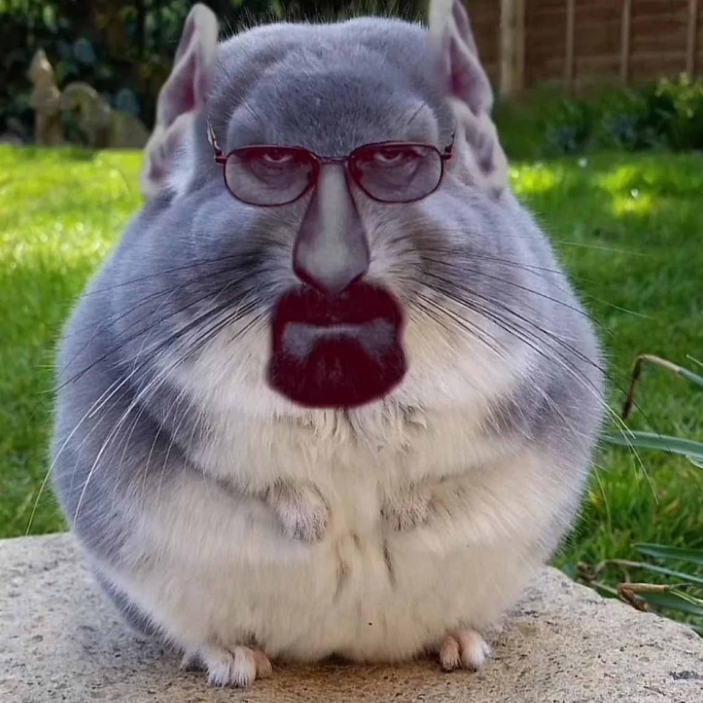
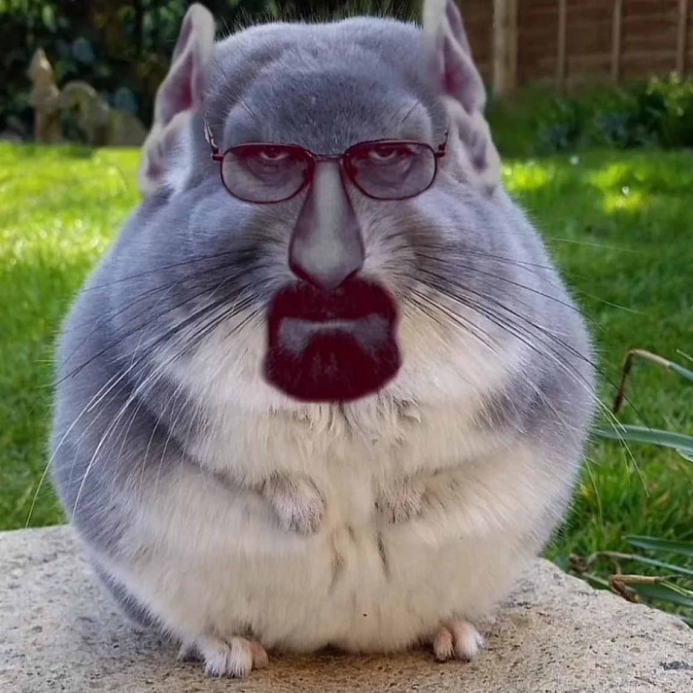

La belleza de los memes
Estas imágenes son una cosa maravillosa, que no tienen mucho sentido entre ellas, sobretodo el brainrot, eso sí que es curioso.
Usaré esta página para poder presentarme con vosotros.
Aquí os dejo con la información sobre mi que considero relevante.
Me gusta jugar videojuegos sobretodo Hearts of Iron.
Me gusta ir al gym.
En mi tiempo libre me gusta adquirir más conocimiento sobre história en general..
Mi série de televisión favorita es Dexter.
Email: cmanchonp@insjoaquimmir.cat
No pongo más porque o si no me doxeáis.
A continuación os deleito con una serie de videos épicos que veo conveniente que veais.
Estas imágenes son una cosa maravillosa, que no tienen mucho sentido entre ellas, sobretodo el brainrot, eso sí que es curioso.
Esto es una obra maestra que he considerado que teniais que ver.